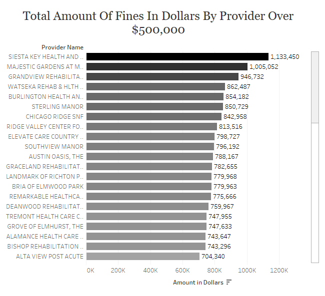
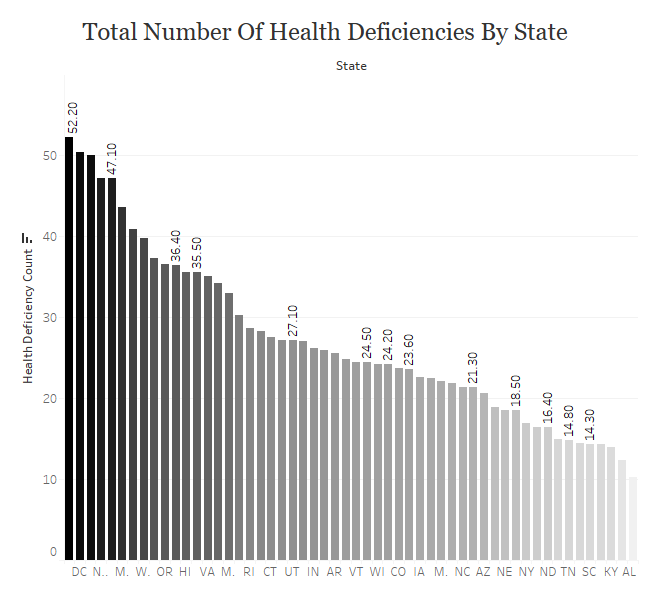

The main objectives for this project was to determine nursing home and/or rehabilitation center deficiencies and how much they cost the providers annually, and subsequently staffing providers in terms of nursing homes and rehabilitation centers per state. Secondly, the next objective was to find ways to drastically reduce the most necessary deficiencies to save on expenditures and incentivize the nursing homes and rehabilitation centers to continuously hire contracted staff utilized through staffing providers. Finally, with the aforementioned established, the next step would be to reduce the pertinent deficiencies to improve the quality of care, which could have a direct correlation to the quality of life for the patients, helping them to live longer. (Pre-existing and extenuating patient health conditions notwithstanding)
All datasets were found on the https://data.cms.gov website, which contained 20 different datasets in total. All of which contained over 1.9 million data points of both qualitative and quantitative data, pertaining to the relevant data fields, so it became evident during the exploratory data phase that it would be necessary to join multiple datasets, in order to obtain an accurate assessment of the data. I merged the Nursing Home Penalties data with the Nursing Home Citation Descriptions data, for the relevant deficiency descriptions, as well as, the Nursing Home Provider Info data, in order to determine the total amounts in fines, and staff turnover rates. I then utilized the Nursing Home State US Averages data for state health and fire safety deficiencies, total cost in fines per state, and also the states with residents that experience depressive symptoms.
As aforementioned, given the amount of data available, the concept to refine and truncate the data proved imperative. My next approach was to discern which key factors carry the most significant weight in determining the worst and most common deficiencies. In order to obtain accurate data analysis without sampling bias, I refined the project scope to the top outliers within a specific range of the top 10 - top 75 of the locations and provider companies that incurred the highest monetary fines and their deficiencies, as well as, the states in which such infractions occurred. Upon further analysis, it became evident that the leading factors of the hefty citations are the nursing homes being under equipped to handle and mitigate predictable circumstances, such as fire code regulations and common evacuation procedures. Moreover, the nursing staff are also commonly negligent to adhere to proper care for residents that suffer from dementia, CPR, improper nutrition, and overall cleanliness of the facilities. Elder abuse, such as theft, neglect, and wrongful use of a resident’s belongings or money was also a general common factor, resulting in high severity fines and penalties.
View Presentation View DashboardTop 10 Nursing Home & Rehab Deficiencies
Total Amount of Fines By Provider Over $500,000
Total Health Deficiencies By State